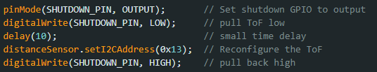
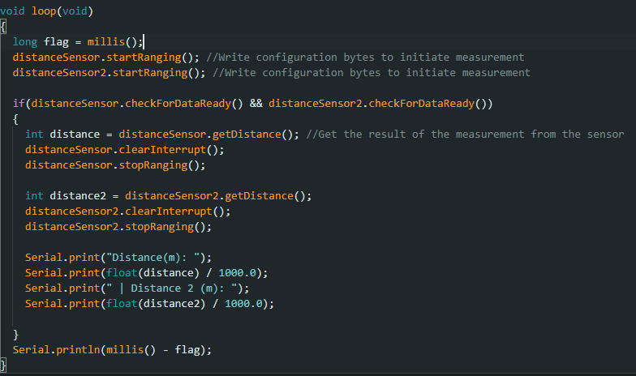

I'm Albert, an undergraduate studying ECE at Cornell. This is my
website for MAE 4190, Fast Robots. My experience with robotics consists of working with agricultural
robots in a research lab and
my project team, where we are working on a robotic sailboat. I am excited to learn more about the
field of robotics and how to apply it to real-world problems.
Lab 1A
In this lab, we will be setting up our Artemis Nano board to be able to communicate
with the board through BLE. This will set us up for future labs to be able to communicate with the
robot through our computer.
Prelab
We first download the Arduino IDE along with the Sparkful Apollo3 board manager. This allows
us
to program our
Artemis board!
Blink
Blink an LED onboard the Artemis board!
Serial
We then check the serial communication between our board and the serial monitor. We can see
messages being echoed back when
we communnicate through the serial monitor. This allows us to print debug statements as well
as
read critical information of the board.
Read Temperature Sensor
We can read the temperature sensor onboard the board by performing an analog read. Running
the example,
we get the following output:
The temperature sensor is connected to an onboard ADC which allows it to convert analog
readings
to digital values. This is then printed to the serial monitor for us to read.
Microphone Output
By playing keys on a piano, we can change the maximum frequency read by the onboard
microphone. We can see the output change as we play different notes. This illustrates the
pulse density microphone on
the Artemis board which converts the analog signal to binary with an FFT computation.
Lab 1B
In part B of this lab, we configure the BLE communication between our Artemis board and our computer.
This allows
us to send commands and receive data through Bluetooth.
Prelab
Before running commands, we need to setup our environment to be able to connect to the
Artemis. We start by installing a virtual environment for Python with with the following
commands:
Launching our virtual environment gives us the following:
We then connect our Artemis to our computer through BLE. The below shows the advertised
MAC address of the Artemis. After getting the MAC address, we can connect to the Artemis
after
configuring the UIUDs of the Artemis to match on the computer and board. We set all of
the connection
information in the jupyter lab notebook.
Once all the proper configurations are made, we can finally connect to the Artemis board!
Task 1
Our first task is to simply send a string from our computer to the Artemis by using the ECHO
command. On
the Arduino side, we see the code below. We simple extract the string and append the extra
characters to the end
before sending it back to the computer.
When sending an ECHO request in jupyter lab, we see the return string as following:
Task 2
We implement the SEND_THREE_FLOATS command to extract three floats in the Arduino sketch. The
Arduino code
shown below extracts each float in a list of 3 that are separated by the "|" character. They
are then stored in
variables and printed to the serial monitor.
When running the command in jupyter lab, we see the following output on the Arduino side. The
floats
are extracted and printed to the serial monitor.
Task 3
To easier debug in the future, we need to implement a way to receive timing information from
the
board. We implement the GET_TIME_MILLIS command to return the current time in milliseconds
tracked
by the Artemis board. This is sent through BLE to our computer.
The above shows the code on the Arduino side. We create a temporary buffer to store the
string of the
current time in milliseconds. We then send this string through BLE by writing to the
characteristic. The
output on the computer side is shown below:
Task 4
After implementing the GET_TIME_MILLIS command, we implement a notification handler. This
allows our computer to automatically parse
the data sent from the Artemis board. We implement a simple notification handler that prints
timing data with the code shown below:
In the above, we see that when sending the GET_TIME_MILLIS command, we can see the timestamp
is printed right when the board sends back the data.
Task 5
To determine how fast timestamp messages can be sent, we will implement a loop that
continuously sends timestamps
in Arduino to our computer.
We read this output in jupyter lab. By reading the amount of sent timestamps for 5 seconds
of messages, we can calculate the amount
of messages sent per second.
We can see that the timestamps are sent at a rate of 44.8 messages per second.
Task 6
Here, we implement a command that will generate an array of timestamps before sending the
entire array. We do this by looping
over a predefined array size and populating the array with the proper timestamps. The
datapoints are then looped over and sent
to the computer.
On the python side, we implement a notification handler that will store each datapoint in an
array. We can find that the
amount of data points sent matches the amount of datapoints on the Arduino side meaning all
data is sent correctly.
Task 7
We also want to receive temperature readings from the board. Here we implement a command
that sends an array of
temperature readings along with an array of corresponding timestamps. The below shows the
Arduino code
which generates 2 arrays, one of timestamps and one of temperature readings in Fahrenheit.
We then send these arrays to the computer
through BLE by sending the temp and time values separated by a "|".
On the python side, we use a similar notification handler that will store each datapoint in
an array. We parse each string received by the
separator "|" and store the values in their respective arrays. By printing the arrays, we
can see the timestamps and corresponsing temperature values.
Task 8: Discussion
Comparing the two methods of sending data, the first being sending data live as it is
recorded and the second is storing the data and sending it all at once.
While in the first method we are able to get real time information, the sampling rate is
limited by the amount of data that can be sent over BLE. In the second method,
we are able to sample data at a faster rate however cannot send data in real time. In this
method, we can record data as quickly as the sensor can sample then send the entire
array at once. In that require real time data and debugging, the first method is preferred.
However, if we are looking for high sample sizes with lots of resolution, method 2 is
preferred.
Given the Artemis has 384kB of RAM and unsigned longs take 4 bytes of space, we are able to
store 96000 datapoints. In the case of storing temperature and time readings,
we can store a total of 48000 sample points.
This lab was a great introduction to the Artemis board and how to communicate with it. In
addition,
I became familiar with the BLE communication and the general debugging process with the
Artemis.
Understanding how to use the serial monitor will be a good skill when debugging in the
future.
Lab 2
In this lab, we will setup the IMU and connect it to our Artemis board via I2C. We will then
implement
chart the data from the IMU and configure all of the sensors onboard. Once configured, we experiment
with various filtering techniques to improve the data quality.
Setup the IMU
Before coding up this lab, we need to setup our IMU. We begin by installing the SparkFun 9DOF
IMU
Arduino library. This allows us to easily interface with the IMU and get readings. We then
run
the basic example
program. In the program we notice the AD0 pin setting. According to the datasheet, this
allows
us to control the I2C address of
our IMU. We use a setting of 0 for our IMU. We see that with the basic example code we see
the IMU data being printed to the serial monitor, confirming that our setup is correct.
Accelerometer
With our table as a guide, we can see the accelerometer readings at -90, 90 and 0, 0 (pitch,
roll). We
utilize the Arduino serial plotter to find the following graphs.
IMU at -90, 90 degrees
IMU at 0, 0 degrees
We can also calibrate out some noise by doing a two point conversion. This will help reduce
the offset and scale errors in the accelerometer readings, providing more accurate data for
our measurements and experiments. By taking the roll values at two endpoints, we can compare
our sensor to an ideal accelerometer
Roll at -90 and 90 (Ideal: Purple, Real: Green)
While this offset may be due to tilting of the table or edge, we can still find the
conversion factor between the two to be 1 / 0.952 with the formula:
S = (I2 - I1) / (R2 /
R1)
We can now analyze our IMU data in the time and frequency domains. We first try to analyze
the passive noise
from the accelerometer by taking a sample and plotting the data in time and frequency. At a
sampling frequency
of 480 Hz, we can see little noise except for a small spike around 30-40 Hz.
Using a cutoff frequency of 35 Hz, we can compute the value of alpha for a low-pass filter
using the formula:
alpha = cutoff_frequency / (cutoff_frequency + sampling_frequency / 2 * pi).
For a cutoff frequency of 35 Hz and a sampling frequency of 480 Hz, we pick an alpha of
roughly 0.2
Time domain and frequency domain graph of IMU pitch around 0 degrees
Upon analyzing our passive noise, we add some active noise to the system by vibrating our
table. Again we see relatively consistent
amplitudes with a small spike around 30-40 Hz.
Time domain and frequency domain graph of IMU pitch around 0 degrees with
vibration
With the alpha value calculated, we can implement a low-pass filter to reduce the noise in
our data. We use the code below, taking the previous value of pitch and multipling it by
(1 - alpha) and adding the current value of pitch multiplied by alpha.
We can see that the low-pass filter does a good job of reducing the noise in our data when
plotting our
unfiltered and filtered responses on top of each other.
Low-pass filter applied to IMU data compared to unfiltered
Gyroscope
We can compare values from our accelerometer to our gyroscope. While the gyroscope readings
are smoother, they are much more susceptible to drift. This is due to the fact that errors will
accumulate on the gyroscope as it measures angular velocity. The accelerometer on the other hand
will drift less however is more susceptible to noise. We use the following equations to compute
our gyroscope angles for roll and pitch which we can compare to the accelerometer angles.
Roll = Roll + (GyroX * dt)
Pitch = Pitch + (GyroY * dt)
Gyroscope Pitch vs Accelerometer Pitch
Gyroscope Pitch vs Accelerometer Pitch
From the graphs, we can tell that the gyroscope is much more susceptible to drift.
We can also see that the gyroscope is very smooth, comparable to the LPF. It does not
suffer the same spikes as the raw accelerometer data. We are also able to change the sampling
rate of
our IMU to see the effects on the data. We can see that lowering the sampling rate, causes
significant increase in gyroscope drift
and decrease in data smoothness.
Gyroscope Roll vs Accelerometer Roll Low Sample Rate
We can also implement a complementary filter to combine the two sensors. The complementary
filter uses a weighted average of the two sensors to get a more accurate reading. We can
implement this with the following code:
This give us the following graph. We notice that our drift issues are gone, as we are able to
rezero both pitch and roll to a fixed point in the graph. We weigh our filter in favor of the
accelerometer
which means we still have vibrations, however we see less noise than the raw pitch and roll from
accelerometer and this can be fixed by further tuning the weights.
Increasing Sampling Rate
To increase our sampling rate, we remove our IMU checks. While before we would check if IMU data
was
ready, now we simply execute our measurements. We also remove all measurements to the serial
monitor in
our main loop providing the following main loop. In this loop, we simply measure the IMU
data and store it in temporary arrays. These arrays are then sent to the computer after
measurements
have finished.
Over a sample size of 500 datapoints containing complementary roll and pitch along with yaw
from the gyro, we are able to achieve a sampling rate of 233 samples / second. Interestingly,
this
sampling rate is not as high as the IMU sample rate. When looking at the output data, we rarely
see repeat values. This means that the IMU is sampling faster than we can read. In addition, the
datasheet
states that the gyro and accelerometer have a max output datarate of 9khz and 4.5khz
respectively, much
faster than our sample rate.
The following code allows us to record 5 seconds of data and send all of the data from the
Artemis to our
computer. The 3 values we send are the complementary roll and pitch along with the gyro yaw.
We confirm that all the values are being sent correctly by printing the timestamps on our python
side.
We see the time starts at 28922 and ends at 33920, confirming that we are able to record a full
5 seconds of data
Array Storage
A consideration we need to make is how to store our data, whether have one large array or
multiple small
arrays. We decide to choose having separate arrays for each value. This reduces code complexity
as instead
of having to parse each value of the array when sending and reading, we can send values
individually. This
also allows for increased flexibility as we can easily choose to only send a specific set of
values.
Considering the memory of the array, we want to minimize the space our datatypes take. For
timestamps, we
use 4 byte ints in order to store the top end of millisecond values. For pitch, roll and yaw, we
require
floats for floating point precision. These are each 4 bytes. In total, each message takes 16
bytes to store.
Given the artemis has 384kB of RAM, we can store a maximum of 24000 messages. With the
previously calculated
sampling rate of 233 samples / second, we can store a maximum of 103 seconds of data.
Stunt!
Driving the car around is really fun! My stunt includes doing some flips and drifting the car
around.
Lab 3
The purpose of this lab is to setup our ToF sensors onboard the robot. This will be done through I2C
and we will
be able to read the distance from the sensors. We attach to ToF sensors, configure them, and test
them to
ensure they are working properly.
Prelab
Before beginning this lab, we need to install the VL53L1X library through the Arduino
library manager.
Once installed, we must setup the I2C address of the sensors. Looking at the datasheet, we
can see
the default I2C address is 0x52. Because we have 2 sensors, we need to change the I2C
address of one of the sensors.
To change one of the I2C addresses, we can use the XSHUT pin onboard the ToF sensor to
temporary shutdown a sensor. By shutting down
one ToF sensor, we can change the I2C address of the other sensor. Once both sensors
restart, they will have unique addresses.
This is significantly simpler than having to continuosly switch them on and off at runtime,
as the addresses will just remain unique.
Wiring diagram of our Artemis with both ToF
attached. We utilize the multi-qwiic connector
to connect both ToF sensors to the Artemis.
We also must determine where to place the ToF sensors on the robot. We mainly want to detect
for obstacles in the forward
direction so we place a sensor at the front. the second sensor is placed on the right side.
The majority of our turns will
be right turns so having a sensor on the right side will help us detect for obstacles when
turning. We will miss obstacles to our
direct left however this is not a major concern.
Hardware Setup
We begin by wiring up our ToF sensors to our Artemis board. We also need to solder the XSHUT
pin of one of the ToF sensors to the Artemis
We then run the example code I2C code. This will ensure that our Artemis can detect the
sensor over I2C. Interestingly, we see that the detected address is 0x29, which is different
than our default address. This is because the LSB of an I2C address is reserved for the
read/write bit.
By shifting one bit left, the address we see is 0x52, which is the default address of the
ToF sensor.
Testing the Sensor
Our I2C sensor has 3 modes of sensitivity: short, medium and long. We can set the mode by
using the setDistanceMode function.
Long distance is optimized around 4m, medium around 3m and short around 1.3m. For our case,
we will be using the short distance mode as we are operating in smaller environments and
need accurate readings at short distances to
avoid obstacles. The below video shows us testing the ToF sensor and reading the output in
the serial monitor
We want to test the accuracy and precision of our ToF sensor. We can do this by measuring
the distance of a wall
at various distances. We can then compare the output of the ToF sensor to the actual
distance. To make sure our
measurements are precise, we repeat this process 3 times to make sure we are getting
consistent readings.
Over 3 trials, we notice we get very consistent readings across 0 - 1.2m, the range
of the short distance operation with an average of 100 samples per sample point. We notice a
slight dropoff
in precision above 1m, where trial 3 and trial 2 skew from linear.
Another experiment we can perform
is to see the impact of ranging time. We can change the ranging time with the function
setTimingBudget.
To test this, we take 100 samples of an object at 10cm with various ranging times and
measure the standard
deviation of the samples. As expected, we notice that higher values of the randing time lead
to more
accurate results as the measured values approach the actual distance. In addition, our
standard deviation
decreases as the ranging time increases.
We can now hook up our second ToF sensor. As stated above, we must shut off one ToF
temporarily to
reprogram the other address which we achieve with the code below:

Once the devices have unique addresses, we can read data from them independently as shown in
the
video. We can print the values from each ToF in the same iteration of our main loop without
having to
switch them on and off, as they have unique addresses.
Our next test consists of trialing the maximum speed we can run our code at with the ToF.
We do this by only polling the ToF when both sensors are ready, else we simply
skip the measurement. At each timestep, we print the time it took between the last iteration
of the code. Below we see the code to check the time between iterations along with the trace
of the serial monitor.

Above we see the printed timestamps. We notice that for every 10 iterations, there is one
ToF measurement which takes
15ms. All other iterations take 5ms. This gives us an average loop time of 6ms. The current
limiting factor is the time it takes
to read the ToF sensor, as it is not ready every iteration. Therefore, we must make sure not
to block on the ToF
every iteration as it will slow down our code significantly.
We can now integrate the ToF sensors with our IMU sensor along with our BLE communication
to get a full set of data from our robot. We can then send this data to our computer for
processing. We add
a new command we can send to the robot 'COLLECT_SENSORS', which will return roll, pitch,
yaw, distance from the front ToF and distance from the right ToF.
The above snippet shows the data collection loop. We make sure to only poll the ToF when
both sensors are ready
in order to not block the IMU which can poll much faster. This gives us a ToF graph that
only has data available
at certain time stamps:
We collected roll and pitch data at the same time as the ToF. We notice that this data is
continuous
as it does not block on the ToF sensors.
Discussion
Overall, this lab was a great introduction to the ToF sensors. We learned how to configure
the I2C address of the sensors
and how to read data from them. We also integrated all of the sensors into our Artemis
system.
This will be very useful for future labs as now we have a suite of sensors to find our
position and find obstacles.
Lab 4
The purpose of this lab is to be able to drive our robot with open loop control. We connect our
Artemis board to the motor drivers and test the motors with a series of simple commands.
Prelab
In order to drive our motors with enough current, we need to parallel couple the inputs and
outputs of our motor drivers.
This is so we can provide twice the current through one motor driver which prevents
overheating and allows us to drive more current.
We make sure that we are parallel coupling the inputs and outputs from the same motor driver
to avoid timing issues.
The above diagram shows the wiring of our motor drivers. Both motor drivers are powered from
a 3.7 V battery separate to the
battery powering the Artemis. This allows us to avoid the current draw from the motors
affecting the Artemis, as this may cause
voltage dips which could shut off the Artemis during runtime. We make sure to choose analog
capable pins to drive PWM
signals to the motor drivers. The pins chosen (3, 5, 14, 15) are chosen to be close to the
motor drivers when mounted. We try to
keep the wiring as short as possible to avoid noise and interference, however I made sure
the wires to the motors
were long for easy access.
Basic Wiring and PWM
We begin by wiring up our motor drivers to our Artemis board and hooking everything up
through an external power supply.
We then prove the motor drivers to make sure they can regulate the input voltage with the
PWM from the Artemis. To test this,
I took inspiration for Nila Narayan (2024) and iterated through the range of PWM values. I
repeated this for both motor drivers,
the following video shows the oscilloscope trace of the PWM signal. We choose a power supply
voltage of 3.7V as this is the same
value as our 850 mAh battery.
With this, we can now drive the motors with the PWM signal. Initially, I tried to drive the
motors from the power supply.
I noticed that the motors would stutter significantly despite the current limit being much
higher than needed. I then
switched to using the battery and the motors were able to be driven. To drive the motor in
both directions, I utilized the following block
of code. I drove the motors in one direction by writing to one channel before switching to
the other.
We drive the motors in different directions by writing to the appropriate channels. We can
see the result in the below
video:
Now that we can drive the motors in both directions, we need to confirm that both motors
function from battery power.
We drive both of the motor controllers independently to make sure we have full
functionality. The below videos
display each side of the robot being driven.
Car Assembly
We can now assemble our car. I wanted to make the multi-qwiic connector as central as
possible as all of the
sensors and Artemis need to be attached to it. I placed it in the center of the car and
assembled the car around it.
I kept the 850mAh battery in the battery compartment but left the 650mAh battery accessible
in case I need to take
out the Artemis. The motor drivers are placed on the sides of the respective motors and I
made sure to keep the ToF
sensors as clear as possible to avoid them detecting wires. The Artemis is placed on the
back for each USB access.
Running the Car
We can now run the car. We start by running the car with both motors at the same speed. We
notice that when trying to
drive the car in a straight line, the car will drift to the right. This can be due to a
number of factors such as the weight distribution of the car,
or mechanical friction differences of each side.
To counter this, we add a calibration constant to our motors. This will scale the speed of
each side to counteract the drift displayed in the
code below.
In our testing, the best value for this constant is around 1.07. We can see the result of
this in the below video. We place a strip of cloth on the ground and see that the car is
able to drive
straight. While this value was found with trial and error, it would likely be better to
determine the value of the constant with a more systematic approach such as measuring the
distance traveled by each side of the car.
PWM Limitations
Another thing we test for is the lower PWM limit. We test for 2 lower limits for PWM, the
first being the minimum PWM value that will overcome static friction. To determine this
value, we simply ramped up
the PWM until the car started moving. In my testing, I found that a PWM value of around 45
was the minimum value that would overcome static friction. Note that my testing was done on
carpet
and I had already been running the car for a while, so the battery was likely at a lower
voltage. The actual value may be lower.
The second lower limit is the PWM value to continue moving after coasting. I determined this
in a similar manner to the first, however I would give the robot a push. Doing so, I found a
PWM value of around 30 was
enough to continue moving after coasting.
Untethered Control
We can now control the car untethered. We implement 5 new commands through BLE:
'DRIVE_FORWARD', 'TURN_R', 'TURN_L',
'FAST_R', 'FAST_L'.
The first command will drive the car forward at a given speed for a given time. The second
and third commands turn
the car for a set period of time in the respective direction. The last two commands are for
fast turns while going
forward. The below video demonstrates control of the car through BLE. This was near the end
of my testing
so the battery was likely at a lower voltage causing small stutters in the movement.
Discussion
Overall, this lab was heavily focused on hardware and wiring. The main challenge I faced was
an issue with one of my motor drivers, which
was shorted when being powered. I determined this as when plugging in the 850mAh battery,
the motor driver would cause the motor to spin.
Initially I thought the Vin and output pins were shorted however after probing with a
multimeter, I detected no short. Interestingly, when
I drove the motor driver with a PWM signal, the PWM signal would dominate the Vin signal and
the motor would follow the PWM value. This allowed
me to continue testing despite the issue.
Lab 5
The purpose of this lab is to be able to drive our robot with basic closed loop control. We implement
a linear
PID controller to drive the robot in a straight line. This is done by checking the ToF sensors and
attempting to drive the robot into a wall and stop just before hitting the wall.
Prelab
We first implement a PID controller command that can be run over BLE. We do this by looping
for a set period of time
and computing the proper PWM value with a function PID, which takes in our current distance
to the wall and a desired setpoint.
The PID function is a simple linear PID controller that computes the error between the
current distance and the setpoint. We then
store the current distance, PID value and timestamp in arrays to later be sent over BLE.
This is done after we stop driving the motors
in order to avoid delays in the loop.
while (millis() - start_time < time_run) {
if (distanceSensor.checkForDataReady()) {
distance = distanceSensor.getDistance(); //Get the result of the measurement from the sensor
distanceSensor.clearInterrupt();
distanceSensor.stopRanging();
distanceSensor.startRanging(); //Write configuration bytes to initiate measurement
}
curr_pwm = PID(distance, 300);
if (i < max_arr) {
tof_ranges[i] = distance;
pid_values[i] = curr_pwm;
timestamps[i] = millis();
}
i++;
}
We implement another command in order to easily tune the PID controller over BLE. This
command takes in 3 values, the P, I and D values sent from our computer.
We then set the PID controller to these values allowing us to tune much faster
float f_a, f_b, f_c;
// Extract the next value from the command string as an integer
success = robot_cmd.get_next_value(f_a);
if (!success)
return;
// Extract the next value from the command string as an integer
success = robot_cmd.get_next_value(f_b);
if (!success)
return;
success = robot_cmd.get_next_value(f_c);
if (!success)
return;
kP = f_a;
kI = f_b;
kD = f_c;
On the python side, we utilize the notification handler from before to receive the data from
the robot. To send the new commands, we
simply have to extend our command list to inclde the new enum values and send the commands
in the same manner as before.
P Control
We first test the P control of the robot. We set the I and D values to 0 and only tune the P
value. We set the setpoint to 300mm(1ft) and
drive the robot forward. We can see the result of this in the below video. Initially, I set
the P gain too high at 0.13 as this would net 255 PWM at 2m. The robot overshot
significantly
before stalling. I lowered my initial P gain to be around 0.09 and I would begin the robot
around 2000mm from the wall, which would
net a PWM of 180.
With just P, we overshoot our setpoint by around 100mm as seen in the below graph. This is
expected as we are not outputting enough PWM once we are close to the setpoint.
PI Control
To mitigate this, we add an I term to our PID controller. This will help us compensate for
steady state error. In addition to the I term, we
also normalize our PWM to be within the range 40 - 255. This sets our lower bound to be the
minimum PWM value that will overcome static friction found
in lab 4. For our I term, the rate variable corresponds to the time between each iteration
of the loop which I measured to be 1.3ms. At 2m, an I of .001 would
integrate at around 2 PWM per iteration which I deemed to be a good starting point. With the
integral and a normalized
PWM, we get a more aggressive response from the robot.
int PID(float curr, float setpoint) {
err = curr - setpoint;
integral += err * rate; // Accumulate the integral term
// Compute PID Output
pwm = kP * abs(err) + kI * integral;
// Normalize PWM output
int normalized_pwm = map(pwm, 0, 255, 35, 255);
if (normalized_pwm > 200) normalized_pwm = 200;
// Drive motors based on error sign
if (err < 0) {
drive(normalized_pwm, normalized_pwm);
} else {
back(normalized_pwm, normalized_pwm);
}
return normalized_pwm;
}
After some tuning, With the I term and normalized PWM values, we stop nearly instantly at
the setpoint. This was with a P gain of 0.07 and integral of 0.0005.
We can see the result of this in the below graph. We notice that we are able to stop within
10mm of the setpoint.
Interpolation
Due to the slow speed of the ToF measures, we see our PID loop is only able to compute a new
value when the ToF samples depite the
two operations being decoupled. To mitigate this, we can linearly interpolate between the
last two ToF samples to get an estimate
distance despite not having a measure. We utilize the following code, which calculates thes
slope between the last two samples and if
there is not new data, we estimate the distance based on the slope.
while (millis() - start_time < time_run) {
new_data = false;
if (distanceSensor.checkForDataReady()) {
new_data = true;
distance = distanceSensor.getDistance(); // Get the result of the measurement from the sensor
distanceSensor.clearInterrupt();
distanceSensor.stopRanging();
slope = (float)(distance - last_dist) / (float)(millis() - prev_measure_time);
last_dist = distance;
prev_measure_time = millis();
distanceSensor.startRanging(); // Write configuration bytes to initiate measurement
}
if(!new_data)
{
distance = distance + slope * dt;
}
// Serial.println(distance);
curr_pwm = PID(distance, 300);
// dt = millis() - prev_time;
// prev_time = millis();
if (i < max_arr) {
tof_ranges[i] = distance;
pid_values[i] = curr_pwm;
timestamps[i] = millis();
}
dt = millis() - prev_time;
prev_time = millis();
i++;
}
When running with just P control value of 0.09, we see that the system is much more
responsive than before and the graph is much smoother. The smoother
graph causes the robot to change the PWM more frequently leading to a more responsive
system. This was surprising to me as I was slightly more
responsiveness however not significantly. I believe this trial was affected by me charging
the battery beforehand.
PID Control
Naturally, we now want to increase the speed of the robot. To do this, I added a D term to
have more control over the loop.
When implementing the D term, I made sure to add a LPF to the derivative term in order to
prevent noise.
int PID(float curr, float setpoint) {
err = curr - setpoint;
integral += err * rate; // Accumulate the integral term
// **Derivative Term with Low-Pass Filter**
float raw_derivative = (err - prev_err) / rate;
derivative = d_filter_alpha * raw_derivative + (1 - d_filter_alpha) * prev_derivative; // LPF applied
// Compute PID Output
pwm = kP * abs(err) + kI * integral + kD * derivative;
// Normalize PWM output
int normalized_pwm = map(pwm, 0, 255, 35, 255);
if (normalized_pwm > 200) normalized_pwm = 200;
// Drive motors based on error sign
if (err < 0) {
drive(normalized_pwm, normalized_pwm);
} else {
back(normalized_pwm, normalized_pwm);
}
// Store previous values for next iteration
prev_err = err;
prev_derivative = derivative;
return normalized_pwm;
}
Despite having PID control, I found my best results were with just P and I control. I
attempted to use a heuristic procedure to tune the system
by increasing kp until oscillation then decreasing by a factor of 2-4, repeating with ki and
then using kd to respond to disturbances. I found I had best
results when removing the kd term. I believe I need to do further work on implementing kd
such as tuning the LPF alpha value. I noticed some stuttering with kd
which I believe to be due to noise. While not particularly fast, my smoothest results occured with kp = 0.04 and ki = 0.0005
as shown in the video below (while suffering from a bit of overshoot, the
system was able to recover fast. I would likely be able to improve by handling integrator
windup):
Speed and Sample Rate
With all of the PID functions implemented, we now can determine our sample rate. By
measuring the amount of timestamps over a period of 6 seconds,
we can determine the sample rate of our PID loop.
We can see that our PID loop is running at around 335 Hz. This gives us a new PID
calculation every 3ms. Since the ToF is decoupled, we also
measure its sample time as well. By counting the amount of times we get a new ToF sample
over 6 seconds, we find the ToF to sample once
every 200ms. The default sample rate of the ToF is around this value as it takes 100ms to
sample and has 100ms between measurements. While this could
be sped up by changing the ranging time and time between measurements, I left these values
at default as I was able to get stable values when interpolating between samples.